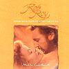

Celtic Lyrics Corner > Artists & Groups > Capercaillie > Rob Roy > Morag's Lament
|  | Morag's Lament |
| Credits : | Traditional; arranged by Capercaillie & Carter Burwell |
| Appears On : | Rob Roy (soundtrack) |
| Language : | Gàidhlig (Scottish Gaelic) |
| Lyrics : | English Translation : |
| Gura mise tha fo éislean | How sorrowful I am |
| Moch sa mhaduinn is mi g'éirigh | Early in the morning rising |
| Ò hì shiùbhlainn leat | Ò hì, I would go with you |
| Hì ri bhò hò ru bhì | Hì ri bhò hò ru bhì |
| Hì ri bhò hò rinn o ho | Hì ri bhò hò rinn o ho |
| Ailein Duinn, ò hì shiùbhlainn leat | Brown-haired Alan, ò hì, I would go with you |